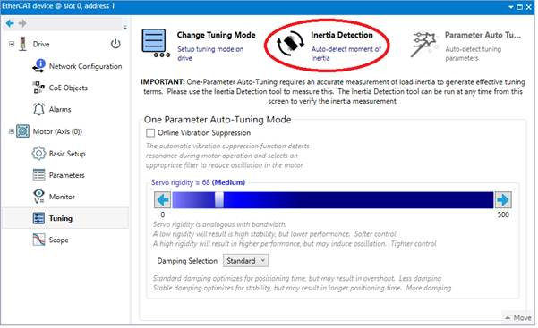
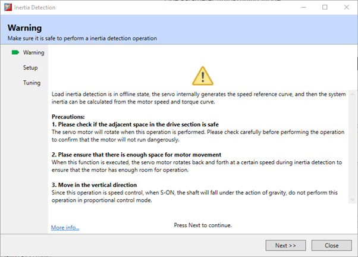
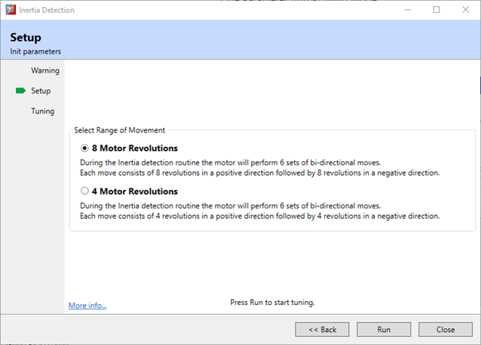
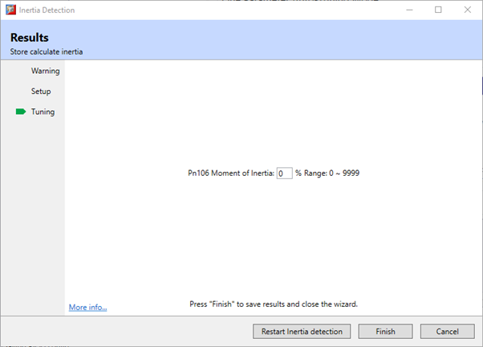

Stop the Motor running before performing this function.
Ensure the movable parts have sufficient travel in the forward and reverse directions, as the Motor will run for up to 8 rotations during this operation.
The Inertia Detection function is used to calculate the load inertia relative to the motor rotor inertia (percentage of load inertia). This tool is available when in either One-Parameter Auto Tuning or Manual Tuning modes.

Selecting this function will launch a wizard which will guide the inertia detection.
|
|
Stop the Motor running before performing this function. Ensure the movable parts have sufficient travel in the forward and reverse directions, as the Motor will run for up to 8 rotations during this operation. |
During the test the motor will rotate back and forth several times (the maximum rotations is 8). The number of motor rotations used is configurable; either 4 or 8.
|
Parameter |
Setting |
Meaning |
Classification |
|
Pn172 |
0 [Default] |
8 rotations |
Function |
|
1 |
4 rotations |
The wizard sequence is:


